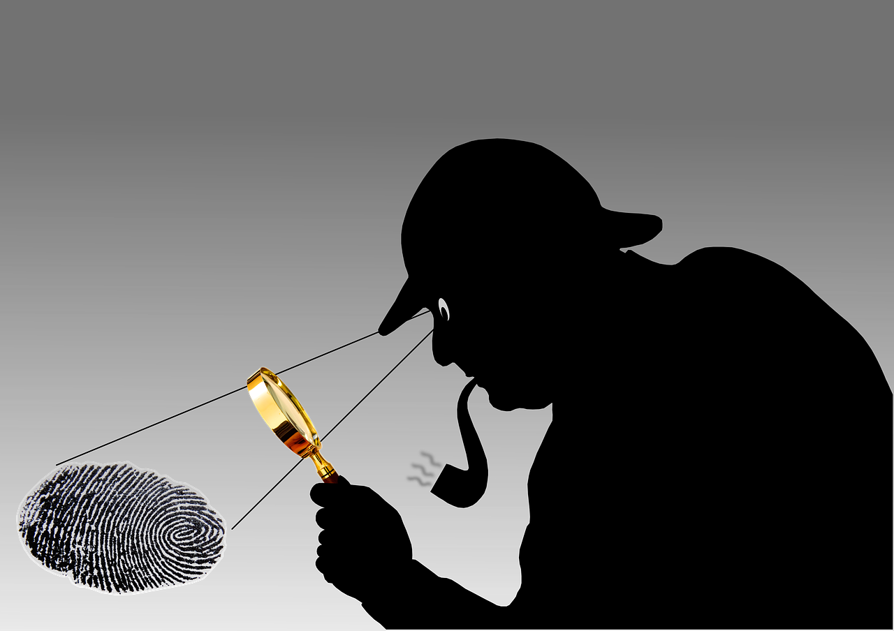
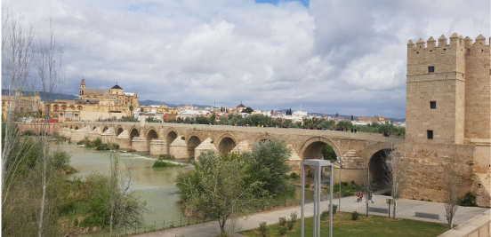

Autoría
| Título | ¡Alerta en Córdoba! Tras las huellas del dragón. |
| Descripción |
Recurso diseñado para integrar el desarrollo de la competencia digital mediante la búsqueda guiada de información y el uso de herramientas interactivas; la competencia en conciencia y expresión cultural, al acercar al alumnado al patrimonio histórico y artístico de Córdoba para fomentar su aprecio y conservación; y la competencia ciudadana, al promover el compromiso con el entorno local. Está dirigido a segundo de Educación Primaria.
|
| Año de creación | 2026 |
| Licencia | Licencia Creative Commons Atribución-ShareAlike 4.0 (CC BY-SA 4.0). |
Este contenido fue creado con eXeLearning, el editor libre y de fuente abierta diseñado para crear recursos educativos.
Créditos de los recursos externos
Comenzamos: planificación
|  |
||
|
Imagen de GraphicMama-team en Pixabay.De uso gratuito bajo la Licencia de contenido de Pixaba |
Canal Sur Turismo. Mezquita Catedral, Córdoba. Youtube (CC0) |
Pixabay. Imagen de Sherlock Holmes, Detective e Investigador. De uso gratuito. |
 |
 |
 |
|
Pixabay. Imagen de Córdoba, España y Andalucía. De uso gratuito. Imagen de pcarrascogarcia en Pixabay |
Pixabay. Imagen de Escuela, Habitación y Capacitación. De uso gratuito. Imagen de Michal Jarmoluk en Pixabay |
Pixabay. Imagen de Google, Www y Buscar en línea. De uso gratuito. |
Producto final
 |
| Imagen de Localización, Tierra y Mapa. De uso gratuito. Imagen de Megan Rexazin Conde en Pixabay |
Guía didáctica para el profesorado

Imagen de Google, Mapa y Marcador. De uso gratuito. Imagen de Clker-Free-Vector-Images en Pixabay |
|
| Imagen de ilustración de navegación de viaje, turista con mapa y pines de ubicación. De uso gratuito. Imagen de Евгения en Pixabay |
Archivo fuente
| Título | ¡Alerta en Córdoba! Tras las huellas del dragón |
|---|---|
| Descripción | Esta situación de aprendizaje busca que el alumnado de 2º de Educación Primaria no sólo aprenda información sobre el patrimonio cultural de Córdoba (España), sino que se conviertan en investigadores activos en su propio entorno, a través de una propuesta de gamificación que les propone un desafío donde se convierte en "héroes y heroínas" con la misión de proteger el patrimonio cordobés |
| Autoría | Esther Mª Gil Barragán |
| Licencia | creative commons: attribution - share alike 4.0 |
Este contenido fue creado con eXeLearning, el editor libre y de fuente abierta diseñado para crear recursos educativos.